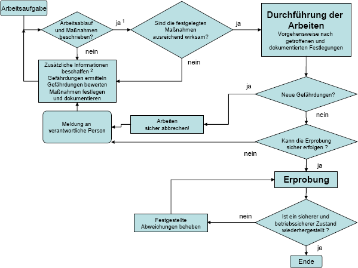

| zu 1: | bei Routinet‰tigkeiten in der Regel gegeben, wenn immer gleiche T‰tigkeit Gef‰hrdungsbeurteilung schon vorhanden Gefahrensituation reproduzierbar Maflnahmen (Arbeitsmittel, T‰tigkeit usw.) festgelegt |
| zu 2: | Herstellerangaben Arbeitsaufgabe Fehlerbeschreibung |